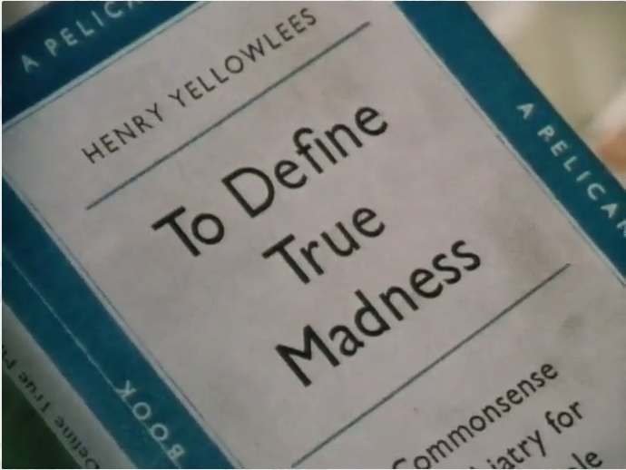
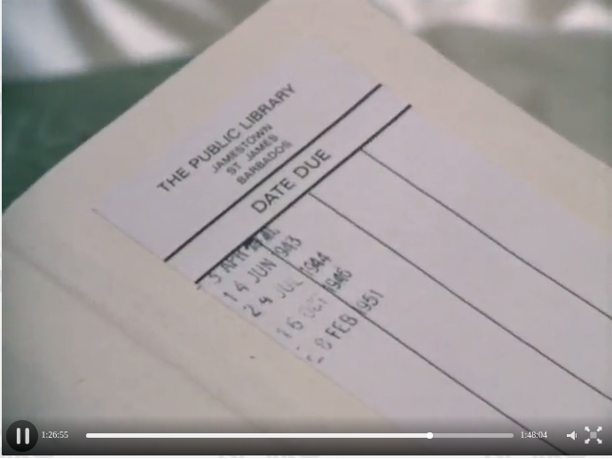
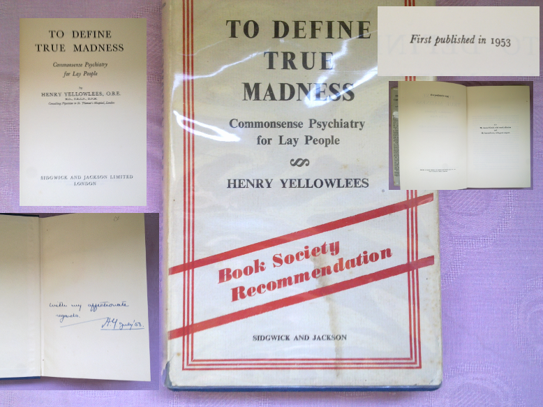

Defined Madness
If you seen Agatha Christie's Miss Marple: A Caribbean Mystery TV Movie
you have to remember a moment when Mrs. Marple finds a book under the
pillows:
this is good known work of Sir Henry Yellowless. Primary scene looks like
this:

What you see is second (revised) edition of
To
Define True Madness: Commonsense Psychology for Lay People
published by Penguin
Books in 1955.
What is Christie say about this book in Chapter 21:
Miss Marple opened the book. It was, she saw, a current work on
nervous diseases.
and then:
It was not a highly technical book, but one that could be easily understood by a layman.
Action of story goes on in late 50s or early 60s as novel written in
1964.
For a while everything okay, before we see next plan:

This became incredible: people took a book far before it was published.
And even thought it is revised print, first edition was issued just two
years sooner in 1953.
How I know? I own one of the first issues with a signature, yes,
you guessed right, the author.
